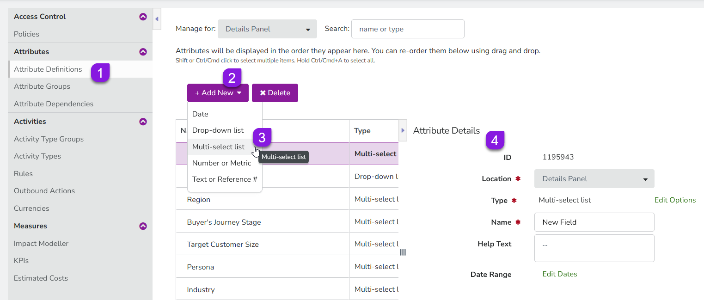
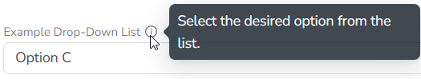

You can create a new attribute to record data on your activity types at any time.
Create a new attribute
In the Activities section, click Settings:
On the Activity Configuration page, the Attribute Definitions section should be displayed by default.
If you're on a different page, click Attributes > Attribute Definitions in the navigation menu.
Click Add New, then select the attribute type you want to create from the list. A new attribute with the name "New Field" is added to the list of attributes, and the Attribute Details panel for the new attribute is displayed: 
Use the Attribute Details section to configure the new attribute. For all attribute types, you can configure the following settings:
Location (required)
Sets where the attribute will be displayed. The details panel is currently the only available location for attributes, so the setting can't be changed.
Name (required)
Sets the display name of the attribute. This name is also used as the label for the attribute when a user is creating or editing an activity. By default, this is set to "New Field" for all newly created attributes.
Help Text
Sets the text that is displayed in the attribute's tooltip. If configured, a tooltip icon is displayed next to the attribute label which displays the help text when the pointer is placed on it:  If no help text is set for an attribute, the tooltip icon is not displayed.
Additionally, you can configure the following settings for Drop-Down List and Multi-Select List attributes specifically:
Edit Options
Defines the list options displayed in the menu, along with their display order and color-coding.
Show Percentages (Multi-Select List only)
Sets whether users can assign a percentage value to each selected list option.
 Settings:
Settings: 
{kind=link}